LAMTOR-1 MODEL
REIMAGINED BYUX CIRCLES,THE DESIGN STUDIO LOOKING FOR NEW CLIENTS.
The most unnecessarily sophisticated plastic flip-flop in Taiwan.
Inspired by the everyday.Designed for real life.From balconies to beaches, LAMTOR is always on the right foot.
現在搭載開源模型 LAMTOR-124/7 全年無休運行
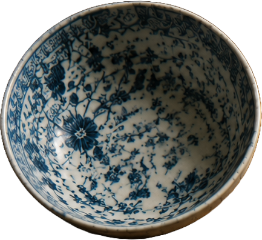
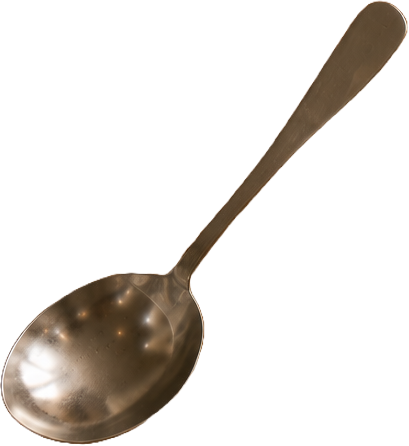
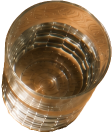
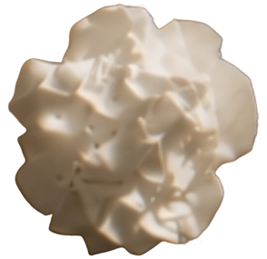
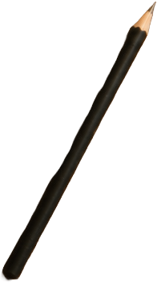
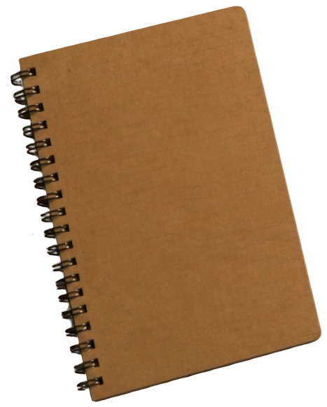
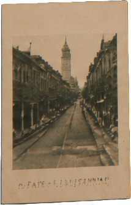
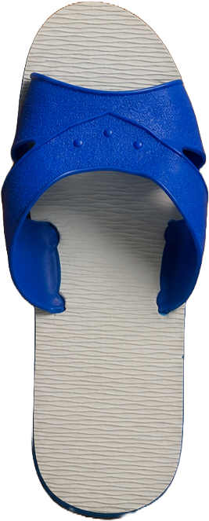
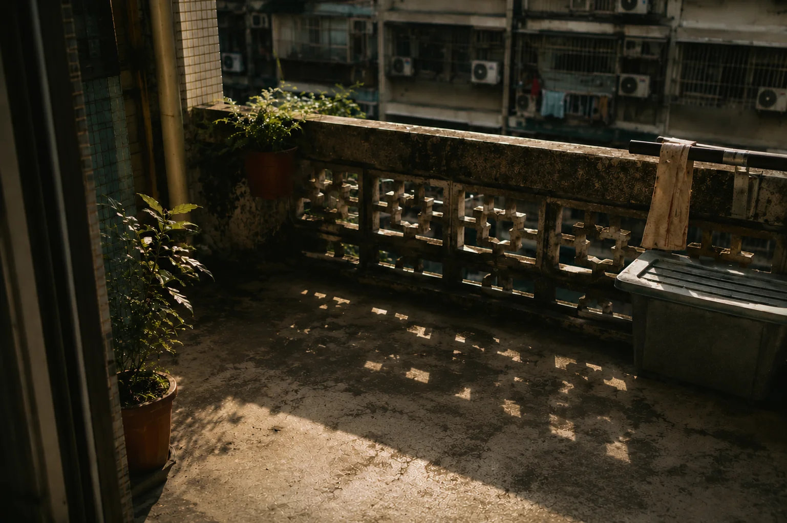
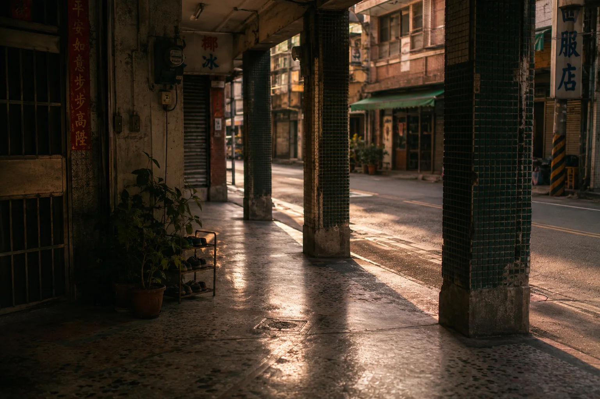
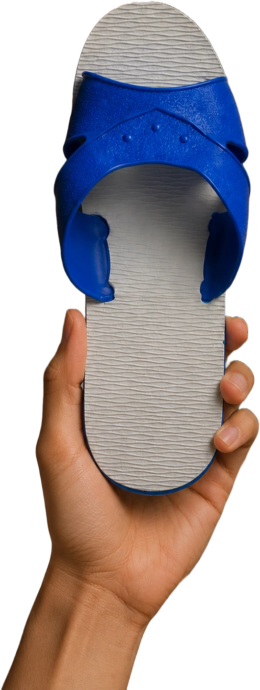
SCROLL TO CONTINUE
Dcard 匿名鄉民
這篇論文比我論文口委還嚴格
匿名鄉民
防滑係數 42.6% 到底怎麼算出來的？
匿名鄉民
我阿嬤看了說這什麼鬼，但她還是穿了 20 年